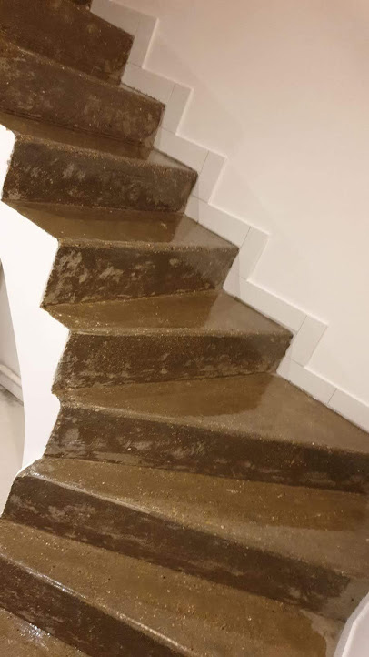
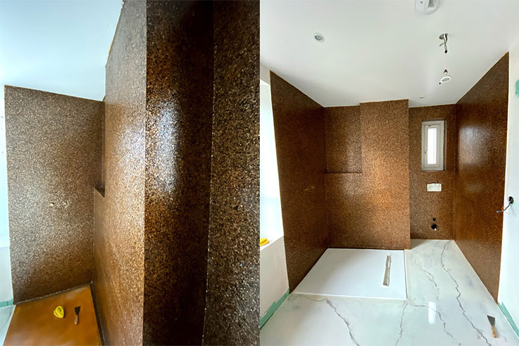
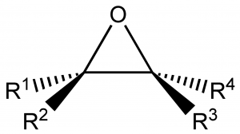

Nos réalisations



Un partenaire de confiance
ENB propose un ensemble de solutions fiables pour la protection et la rénovation des sols aux particuliers.
Spécialistes des revêtements de sol en résine époxy, nous nous adaptons également aux univers à fortes contraintes des métiers de l'industrie et des services.
Résine époxy de faible épaisseur, communément appelée peinture de sol, elle s'applique en finition pour la protection (anti-poussière) des sols neufs, sur les mortiers auto lissants ou truellables ou sur les sols déco.
Les effets de la finition « peinture époxy » sont esthétiques et techniques : brillant, mat ou satiné, lisse ou antidérapant ou aspect peau d'orange.
Caractéristiques techniques :
En fonction des spécificités de votre métier, nous nous adaptons à vos contraintes pour vous proposer des solutions de sols industriels en résine proches de vos attentes :
La qualité sur-mesure
En fonction des spécificités de votre métier, nous nous adaptons à vos contraintes pour vous proposer des solutions de sols industriels en résine proches de vos attentes
Nos réalisations
La qualité avant tout
Les polyépoxydes, encore appelés polymères époxyde ou improprement « époxy », sont fabriqués par polymérisation de monomères époxyde avec un durcisseur (agent de réticulation) qui peut être à base d’anhydride d’acide, de phénol ou le plus souvent d’amine (polyamine, aminoamide) : ce sont des polymères tridimensionnels.

Le représentant le plus connu des polymères époxyde est la colle Araldite.
Leur première synthèse date des années 1940.
Les résines époxyde (ou époxydiques) durcissent (réaction irréversible) en présence d’un durcisseur, sous l’effet de la chaleur (matériaux thermodurcissables)
Résine époxyde + durcisseur → polyépoxyde.
En formulation, on leur incorpore divers durcisseurs, diluants réactifs ou non, plastifiants, charges, solvants, additifs (colorants, stabilisants…).
Source Wikipedia.
Rapide, solide, esthétique, la résine époxy possède de nombreux atouts. Elle permet de réaliser des sols sans joints et fermés, qui répondent aux normes techniques et à toutes les sollicitations du monde industriel :